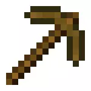

Kilof (ang. Pickaxe) – jedno z narzędzi w grze Minecraft. Służy do wydobywania większości materiałów.
| Wytwarzanie |
| Naturalne generowanie |
| Handel |
| Wydobywanie |
Otrzymywanie
Wytwarzanie
| Matariały | Wejście > Wyjście |
| 2 patyki + 3 deski lub 3 bruk lub 3 sztabki żelaza lub 3 sztabki złota lub 3 diamenty |
Naturalne generowanie
- Pojedynczy drewniany kilof ma 75% szansy na wygenerowanie w bonusowej skrzyni.
- Pojedynczy kamienny kilof ma 25% szansy na pojawienie się w bonusowej skrzyni.
- Pojedynczy żelazny kilof może zostać znaleziony w skrzyniach w twierdzach (12,2% szansy), w wioskowych kuźniach (26% szansy) lub w wagoniku ze skrzynią w opuszczonych kopalniach (7% szansy).
- Zaklęte żelazne i diamentowe kilofy można znaleźć w miastach i statkach Endu (13,4% szansy).
Handel
Zaklęte diamentowe kilofy można pozyskać poprzez handel za 12-15 szmaragdów, a zaklęte żelazne kilofy za 9-11. Zaklęcia mogą mieć poziomy 5-19. Kilofy netheritowe można uzyskać po przez handel z piglinami.Zastosowanie
Wydobywanie
Kilof jest jednym z najbardziej potrzebnych narzędzi w Minecraft. Jest on wymagany, aby wykopać poszczególne surowce. Aby otrzymać diamentowy kilof potrzebne jest najpierw zrobienie drewnianego, którym wykopie się kamień na następny. Z kamiennego wykopie się żelazo, a z żelaznego diamenty. Diamentowy kilof jest wymagany do wykopania obsydianu, aby mieć
